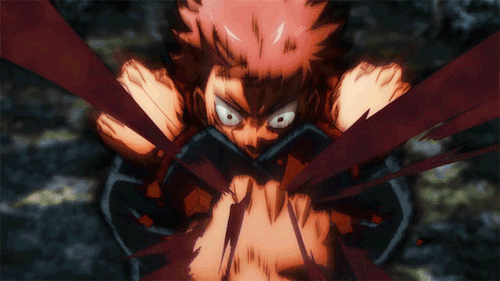

Ryomen Sukuna
Ryomen Sukuna: O Rei das Maldições que Desafia os Limites da Escuridão
Ryomen Sukuna é uma das figuras mais aterrorizantes e fascinantes de Jujutsu Kaisen. Conhecido como o "Rei das Maldições", ele representa uma força de destruição e caos que transcende a compreensão comum. Seu nome ressoa através da história como um símbolo de poder absoluto e malícia implacável.
Sukuna é uma entidade amaldiçoada com uma origem envolta em mistério e lendas antigas. Diz-se que ele foi um ser temido e poderoso desde tempos imemoriais, com suas ações e influência deixando uma marca indelével na história das maldições. Sua aparência é tão imponente quanto seu poder: ele possui quatro olhos e um sorriso cruel que exala uma aura de ameaça constante. As cicatrizes em seu rosto e sua expressão maliciosa fazem dele uma visão temida por todos que o encontram.

O poder de Sukuna é quase incompreensível. Como uma das maldições mais poderosas já conhecidas, suas habilidades sobrenaturais permitem-lhe manipular e criar maldições com facilidade, realizar feitos devastadores e superar qualquer adversário. Sua força física é imensa, e suas técnicas amaldiçoadas têm o potencial de causar destruição em larga escala. Cada ação sua é marcada por uma crueldade fria e uma inteligência estratégica que tornam suas investidas ainda mais perigosas.
No enredo de Jujutsu Kaisen, Sukuna desempenha um papel central como um dos principais antagonistas. Embora tenha sido selado há séculos, seu legado e influência continuam a impactar profundamente a história. Ele se opõe aos protagonistas com uma ameaça constante, desafiando os jujutsus com sua presença formidável e suas intenções cruéis.

Ryomen Sukuna é mais do que apenas um vilão; ele é uma personificação do mal que transcende o físico e o psicológico, representando a essência de que o verdadeiro terror pode residir nas profundezas mais escuras do poder e da intenção. Sua presença é um lembrete constante de que o medo e a crueldade podem assumir formas verdadeiramente aterrorizantes.
A história de Sukuna se complica quando esses dedos são espalhados pelo mundo, servindo como relíquias amaldiçoadas que, se ingeridas, concedem poder imenso, mas também o risco de ressuscitar Sukuna em quem as consumir. No presente, o jovem Yuji Itadori acidentalmente ingere um desses dedos, tornando-se o receptáculo de Sukuna. Embora Sukuna tenha a intenção de recuperar todos os seus dedos para retomar sua forma completa, ele se vê em conflito constante com Yuji, que tenta controlar a maldição dentro de si.
Mesmo selado no corpo de Yuji, Sukuna demonstra ser um adversário astuto e brutal, manipulando situações para obter vantagens e desafiar os feiticeiros de Jujutsu que o caçam. Sua presença constante é um lembrete do perigo que ele representa, e o renascimento completo de Sukuna é uma ameaça que paira sobre todo o mundo, tornando-o uma lenda temida tanto no passado quanto no presente.

Ryomen Sukuna, uma figura lendária e temida no mundo do anime e mangá Jujutsu Kaisen, era um poderoso espírito amaldiçoado conhecido como o "Rei das Maldições". Na antiguidade, ele foi um feiticeiro humano que se tornou uma entidade maligna após sua morte, ganhando um poder imenso e insaciável. Sukuna era tão temido que, após sua morte, seus restos mortais – 20 dedos mumificados – continuaram a conter uma energia amaldiçoada tão poderosa que ninguém conseguia destruí-los.